Берлин · что смотреть в ближайшие три месяца
Не афиша, а путеводитель по искусству города: что идёт и как это читать — жанр, имя, контекст.
Выпуск от 1 ноября · 36 выставок · 2 закрываются в ближайшие 2 недели
Фокус недели
Пять выставок, куда стоит сходить на этой неделе — сначала то, что скоро закроется, затем свежие открытия.
Фотография
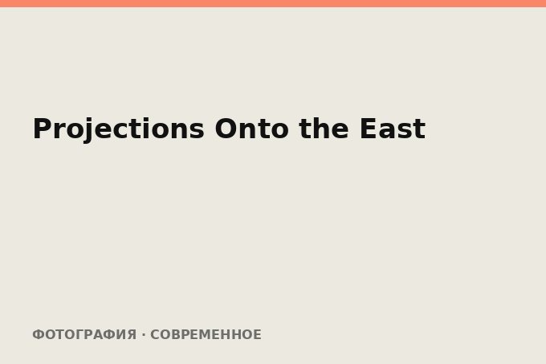
Групповое высказывание о том, как западный взгляд веками конструировал «Восток» — от ориентализма до холодной войны. Хельмар Лерски, Габриэле Штётцер, Анджей Штайнбах и другие разбирают саму оптику проекции. Вход свободный; та же выставка идёт и в Schinkel Pavillon.
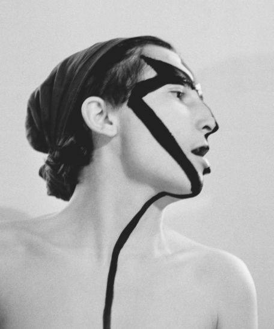
Восточногерманская художница и писательница, сидевшая в тюрьме Штази за подпись под протестом. После освобождения её главным материалом стало тело — фотосессии, перформансы, Super-8, снятые в подпольной женской сцене Эрфурта. Это искусство сопротивления из первых рук, сделанное теми, кого режим пытался стереть. Редкий шанс увидеть феминистский андерграунд ГДР не в пересказе.
Лорен Гринфилд почти тридцать лет снимает то, что обычно прячут, — деньги, статус, тело, взросление. В «Generation Wealth» она собрала энциклопедию глобального культа богатства; здесь фокус на подростках и первом поколении, выросшем внутри соцсетей. Это документальная фотография, которая работает как социология: не осуждает, а показывает, во что превращается детство, когда камера у каждого в руках. Смотреть — как в зеркало эпохи.
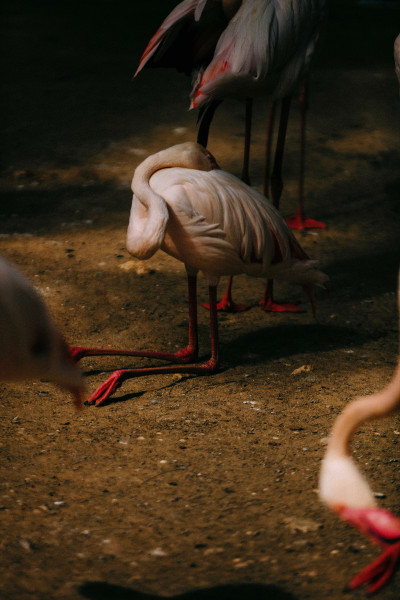
Стелиос Калиникоу снимает кипрский ландшафт так, что за красивым кадром всегда проступает политика: его полуостров Акротири — место, где миграционные пути птиц переплетены с британскими военными базами. Лауреат премии After Nature — о том, что «природа» давно не невинна. Тихая, но острая фотография о территории и контроле.
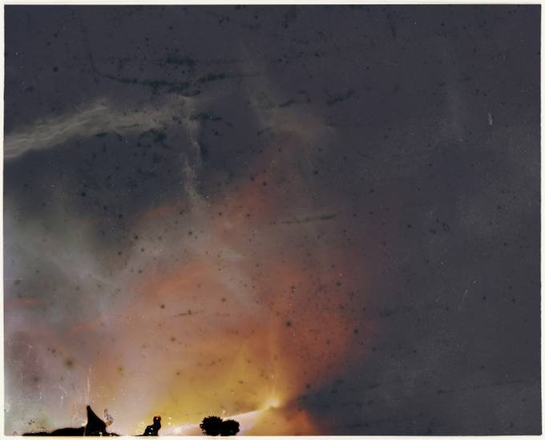
Сюзанне Криманн работает на стыке фотографии, науки и экологии: проявляет плёнку гамма-излучением, печатает растениями, делает видимым геологическое и радиоактивное время. «Pechblende» — о невидимых следах, которые человек оставляет в материи земли. Искусство как исследование, где камера становится научным прибором.
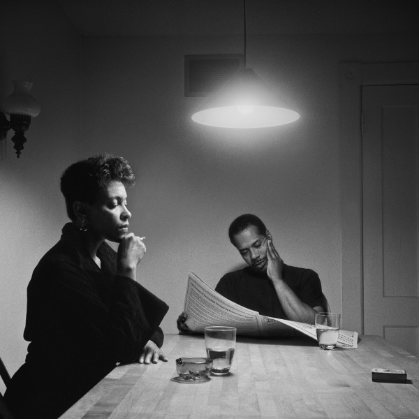
Одна из важнейших художниц США: её «Kitchen Table Series» (1990) — постановочные чёрно-белые сцены за кухонным столом — давно вошла в канон разговора о расе, гендере и власти взгляда. Уимс превращает частное (женщина, семья, дом) в политическое, не повышая голоса. «The Heart of the Matter» — повод увидеть вживую художницу, с которой считается вся современная фотография.
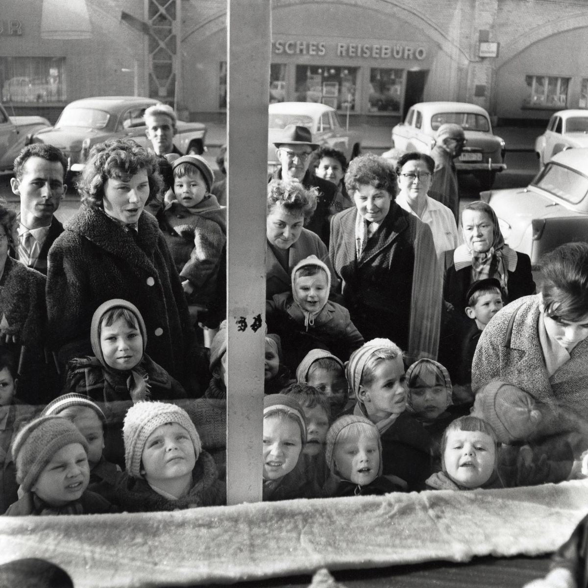
Классик гэдээровского фоторепортажа, снимавший Вьетнам, Никарагуа и будни соцлагеря с редким сочувствием к человеку в кадре. «Die Augen weit offen» (Глаза широко открыты) — ретроспектива взгляда, умевшего находить достоинство там, где пропаганда искала героизм. Для понимания восточноевропейской визуальной культуры XX века — обязательное имя.
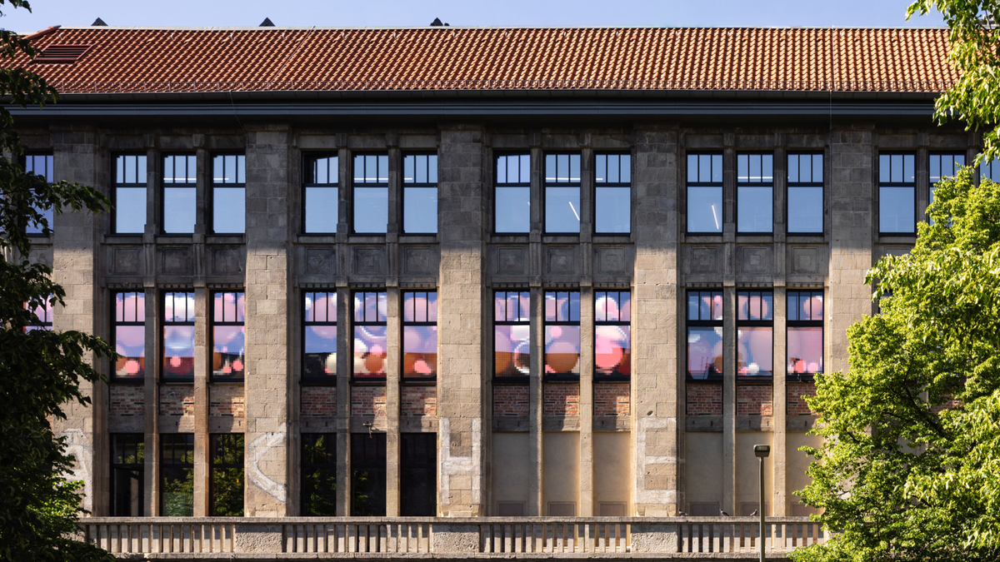
Немецкий дуэт Фридеман Банц и Джулия Бовинкель работает на переднем крае цифрового искусства: 3D-анимация, дополненная реальность, алгоритмически сгенерированные среды. Их аватары и орнаменты — о том, как машинное зрение и виртуальные тела меняют само понятие изображения. Если хочется понять, куда движется искусство после фотографии, — сюда.
Современное искусство
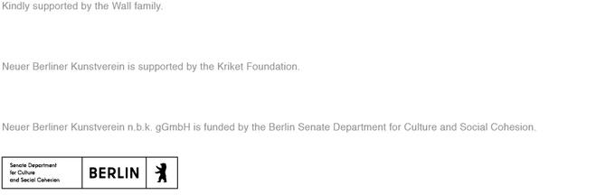
Уличный проект Доры Будор и Ноя Баркера на билборде n.b.k. — искусство, вынесенное из зала в город, где его видят случайные прохожие. Будор известна инсталляциями, в которых оживает сама инфраструктура выставки. Бесплатно и мимоходом — но стоит поднять голову.

Фестиваль коллектива Creamcake на стыке музыки, визуального искусства и ночной культуры — в этом году «Beyond Imagining», про ИИ-воображение и цифровую жуть. Видеопрограмма в IBB Video Space. Срез самого актуального пересечения арта и электронной сцены Берлина.
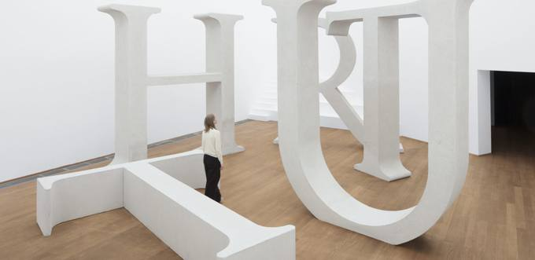
Индийская художница, работающая с границами — государственными, языковыми, границами того, что вообще можно произнести. Её инсталляции из звука, света и текста говорят о цензуре и заключённых поэтах тихо, но так, что пробирает. «What Still Holds» — о том, что держит нас вместе, когда всё расходится. Политическое искусство без лозунгов.
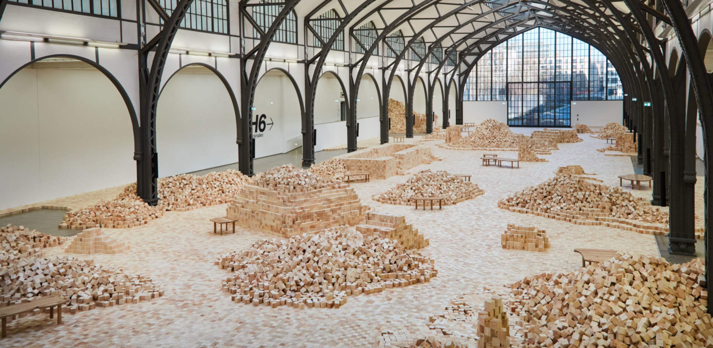
Литовская художница, соавтор оперы-перформанса «Sun & Sea» — пляжа посреди павильона, который принёс Литве «Золотого льва» Венеции 2019 и стал одним из главных произведений о климате. Заказ CHANEL в Hamburger Bahnhof — её работа о времени, труде и голосе. Если видели «Sun & Sea», знаете: Лапелите умеет превращать будничное в гипнотическое.
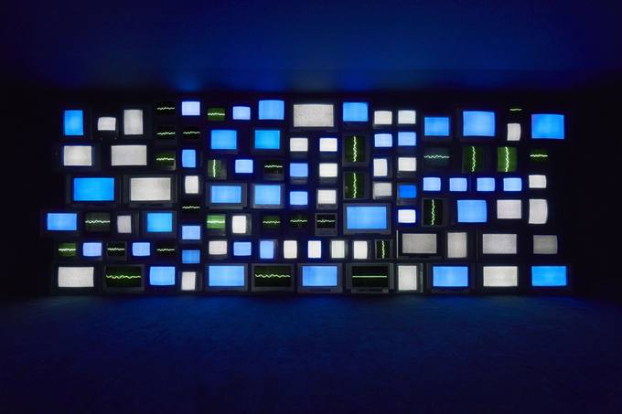
Американо-британская художница, превратившая антропологию в искусство: она собирала открытки, записи «говорения на языках», сны — и делала из архива человеческого бессознательного произведения. «Bad Dreams» — первый большой берлинский обзор пионерки, повлиявшей на целое поколение. Для тех, кому близко пограничье науки, оккультного и памяти.
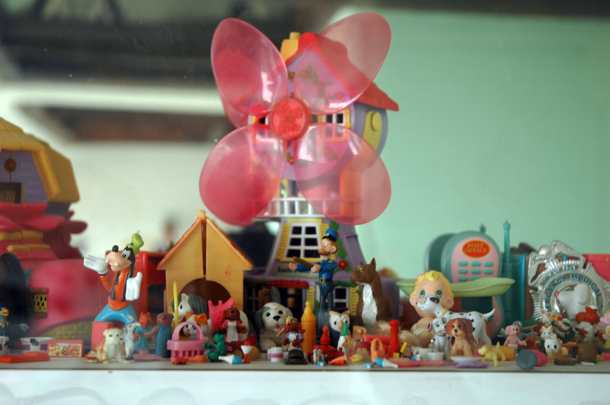
Корейская художница почти невидимых жестов: фосфоресцентные скейт-парки, запахи, магнитные камни, едва уловимые сдвиги пространства. «OUSSSEAN» продолжает её работу с тем, что чувствуешь прежде, чем видишь. Искусство, которое просит замедлиться и довериться телу.
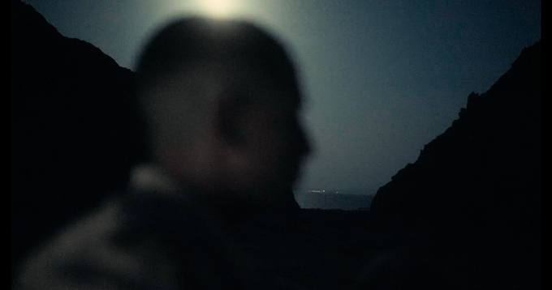
Молодой художник ирландско-египетского происхождения, работающий с фотографией, звуком и найденными объектами; город у него не фон, а материал. Выставка в KW — часть внимания институции к новому поколению. Шанс увидеть художника до того, как о нём заговорят все.
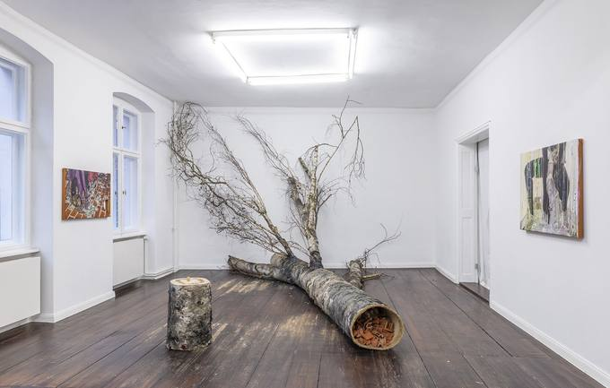
Итоговый смотр Berlin program for artists — менторской программы, через которую прошли многие заметные берлинские художники. Это срез самой молодой сцены города: те, чьи имена через пару лет будут в галереях и на ярмарках. Лучший способ почувствовать, куда движется берлинское искусство прямо сейчас.
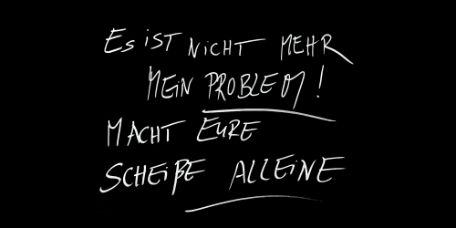
Кристоф Шлингензиф — самый радикальный немецкий художник послевоенного поколения: режиссёр, стёрший границу между театром, кино и политической акцией. Ретроспектива его наследия в Gropius Bau — о силе искусства, которое отказывается быть вежливым. Сложно, яростно, важно.
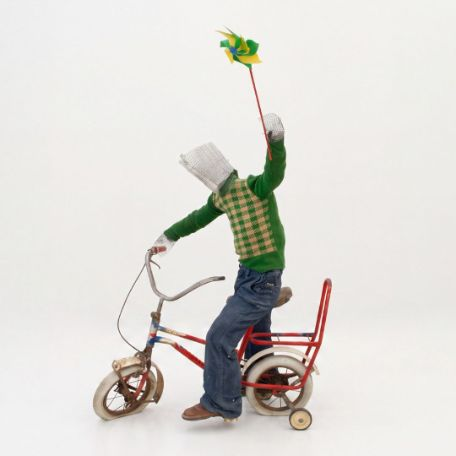
Искусство и миграция в Кройцберге с 1960-х: как бедный приграничный район у Стены стал мифом мультикультурного Берлина — сквотов, панка, турецких семей и художников. Выставка-портрет места, которое придумало себя само. История города через один квартал.
Маурицио Каттелан — главный провокатор современного искусства: это он приклеил банан к стене скотчем (и продал за $120 тысяч) и отлил из золота работающий унитаз «Америка». За хохмой всегда прячется разговор о смерти, власти и цене вещей. «NIGHT» — его лауреатский проект Preis der Nationalgalerie 2026 в строгом стеклянном павильоне Миса ван дер Роэ: контраст храма модернизма и чёрного юмора обещает быть сильным. Одно из главных имён сезона.
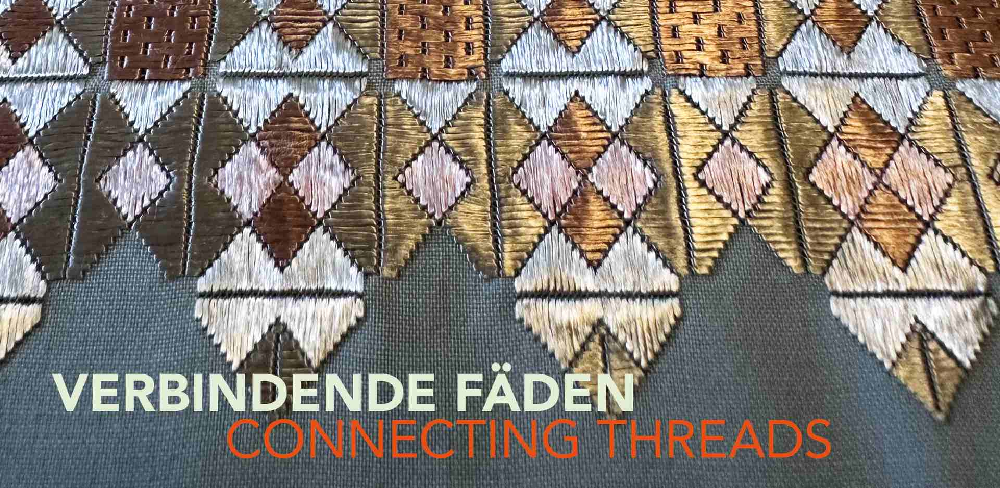
Вышивка афганских мастериц и диаспоры — ремесло, которое выставка вводит на территорию «высокого» искусства. Нить как женский язык памяти, выживания и сопротивления там, где другие голоса заглушены. История Афганистана, рассказанная руками.
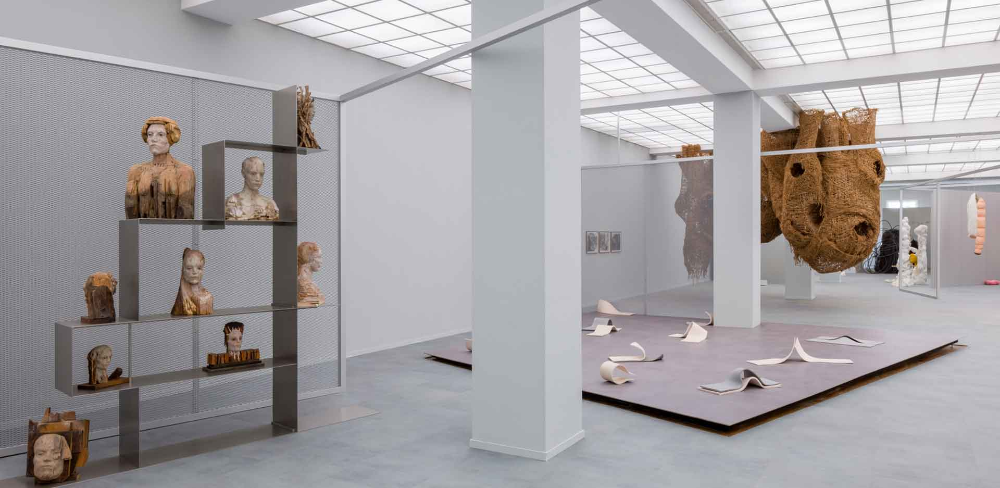
Групповая выставка о «материи заботы» — одной из центральных тем искусства 2020-х: после десятилетий культа новизны художницы спрашивают, что значит не создавать, а поддерживать, чинить, удерживать. Феминистская оптика care-этики, переведённая в объекты и инсталляции. Разговор о том, из чего на самом деле сделан мир.
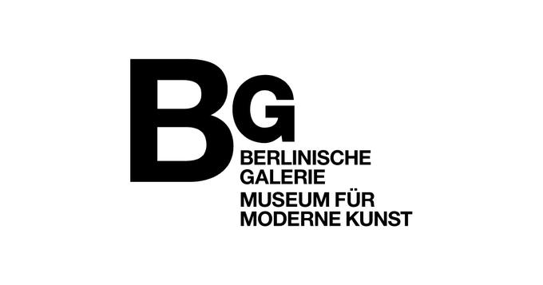
Лауреат GASAG Art Prize 2026. Дживи Ли работает со следами — пылью, золой, отпечатками, — превращая остатки и стирание в материал памяти. Её работы о том, что исчезает, но оставляет вмятину. Тихая, медитативная выставка.
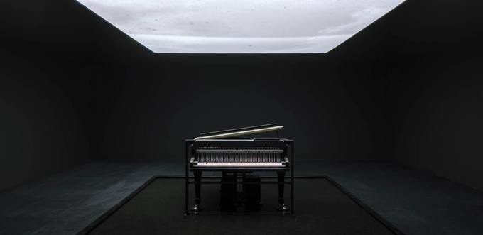
Рюити Сакамото — композитор, без которого не было бы современной электронной музыки: Yellow Magic Orchestra, саундтреки к «Последнему императору» и «Выжившему», поздние альбомы о тишине и смерти. Эта мультимедийная инсталляция, открытая уже после его ухода в 2023-м, превращает звук в пространство, по которому можно ходить. «Seeing sound, hearing time» — выставка, которую буквально слушаешь. Для всех, кто любит музыку не меньше, чем искусство.
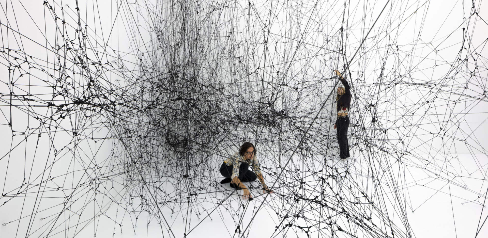
Групповая выставка в Hamburger Bahnhof о соседстве как условии современной жизни: кто рядом, где граница между моим и чужим пространством. Инсталляции, превращающие музейный зал в модель общежития. Тема, особенно живая в городе, который постоянно пересобирает, кто в нём свой.
Живопись и графика
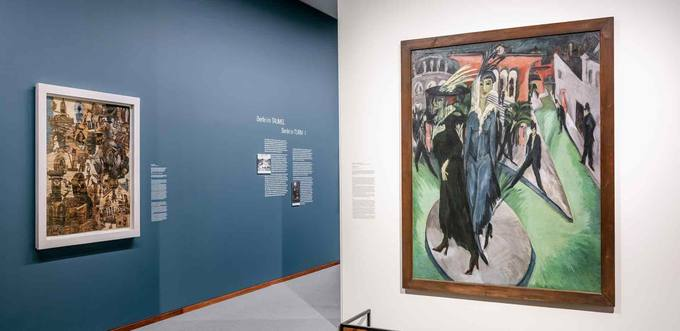
Берлин на разломе — между крахом кайзеровской Германии, революцией и приходом нацизма: экспрессионизм, дада, Neue Sachlichkeit. Живопись и графика города, который за двадцать лет стал лабораторией всей европейской модерности и успел всё — эйфорию, нищету, свободу и предчувствие катастрофы. Ключ к тому, почему «веймарский Берлин» до сих пор миф.
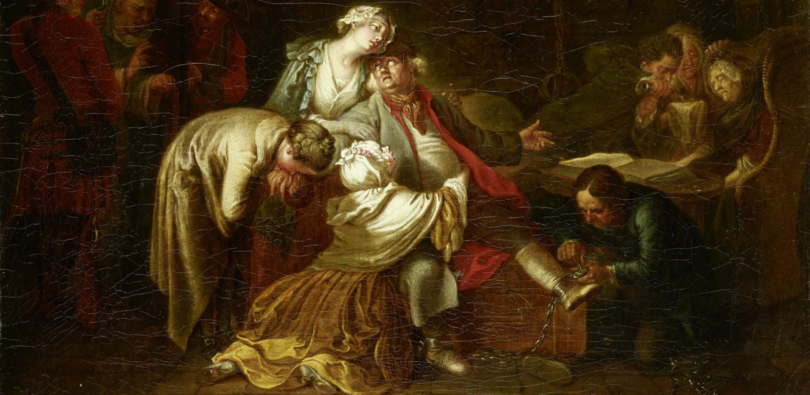
Даниэль Ходовецкий — берлинский график эпохи Просвещения, чьи гравюры были массмедиа XVIII века: иллюстрации, календари, сцены нравов расходились тиражами и формировали вкус горожанина. Выставка о том, как картинка учила Европу думать и чувствовать задолго до фотографии.

Ловис Коринт — один из столпов немецкого импрессионизма и глава Берлинского сецессиона, живописец мощной, почти телесной манеры. «Then Came Berlin!» — о его переезде и взлёте в столице, о женской школе живописи, которую он держал, и о том, как инсульт 1911-го изменил его кисть, сделав её свободнее и трагичнее. Большая музейная монография классика.
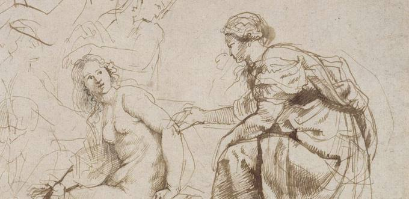
Не парадные холсты, а рисунки трёх великих фламандцев — там, где видна сама мысль до того, как застынет в живописи: беглая линия Рубенса, наблюдательность ван Дейка, плотность Йорданса. Для тех, кто хочет понять барокко изнутри, с черновика.
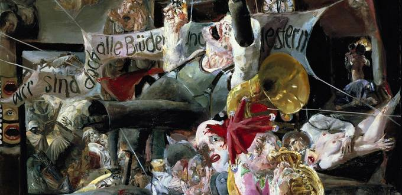
Смелый кураторский ход: Национальгалери сталкивает своих звёзд современности — Андреаса Гурски, Сару Лукас, Энди Уорхола, Хоана Миро — с искусством «длинного XIX века» из собственного собрания. Приём, которым музеи сегодня проверяют канон на прочность: что из старого всё ещё держит удар рядом с новым. Интереснее всего — зазоры между эпохами.
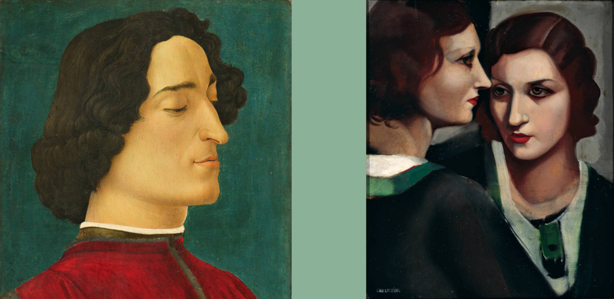
Пять веков портрета в одном маршруте — от ренессансной идеализации Боттичелли до холодного гламура ар-деко Тамары де Лемпицки. По сути выставка о том, как менялось само представление, что значит «изобразить человека»: душа, статус, маска, бренд. Богатый повод подумать, зачем мы вообще вглядываемся в чужое лицо.
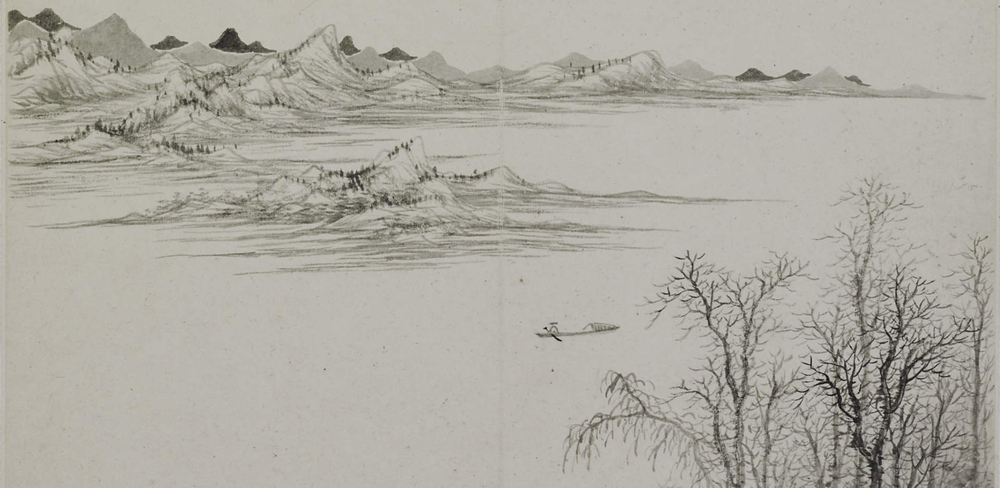
Китайская традиция «ухода на реки»: образованный человек, разочарованный в смуте власти, удаляется к воде, к рыбакам и горам. Пейзаж здесь не вид из окна, а политическое и духовное убежище. Тихие свитки, которые сегодня читаются почти буквально.
История, археология, идеи
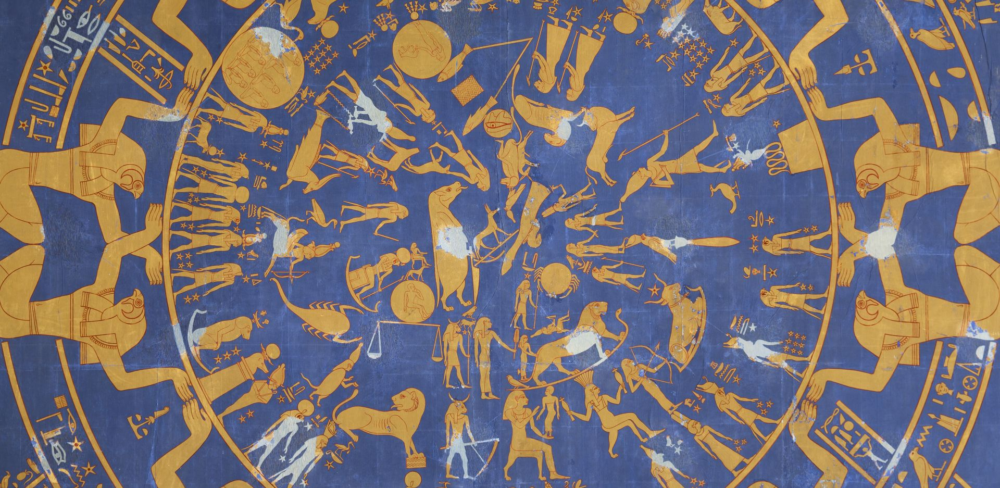
Откуда взялся зодиак: выставка прослеживает рождение астрологии из вавилонских таблиц и египетских потолков — попытку человечества прочитать судьбу по небу. Древние артефакты и тексты о вечном желании знать будущее. Для всех, кто втайне проверяет гороскоп.
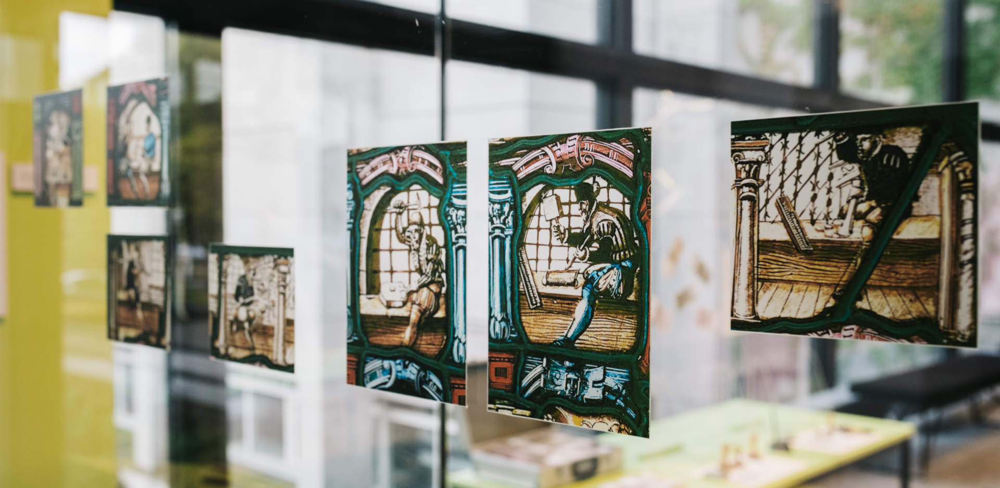
Выставка о деньгах, власти и ценности как сквозном сюжете истории человечества: от ракушек-валюты до кредитного рейтинга. Что мы соглашаемся считать ценным — и кто это решает. Разговор на стыке искусства, экономики и антропологии, особенно уместный сейчас.
Первая в Германии выставка такого масштаба о Монгольской империи — крупнейшей сухопутной державе в истории. Современная историография переворачивает образ Чингисхана: не только завоеватель, но строитель трансконтинентальных путей, по которым шли товары, технологии и идеи. Археология, оружие, рукописи и реконструкция мира, связавшего Восток и Запад за века до глобализации.
Архитектура и город

Йозеф Кайзер — архитектор восточногерманского модернизма, автор Karl-Marx-Allee и кинотеатра Kino International, икон социалистического Берлина. Выставка о том, как власть ГДР строила утопию в бетоне и стекле — и что от этой утопии осталось в сегодняшнем городе. Must для всех, кто любит берлинскую архитектуру.
Кино и перформанс
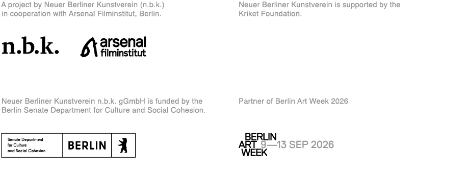
Кристоф Хоххойслер — режиссёр «берлинской школы» кино, холодной и точной. Его выход в выставочное пространство n.b.k. — о границе между кадром и инсталляцией, нарративом и образом. Для тех, кто любит кино как форму мышления.